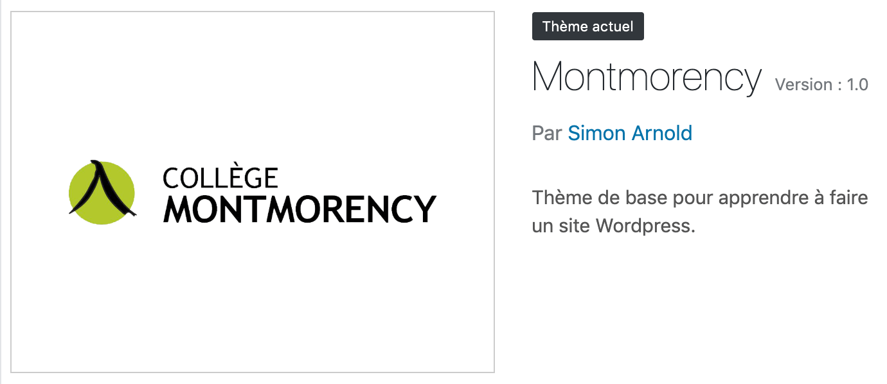

Le fichier style.cssest particulier. WordPress s'attend à trouver un fichier avec ce nom à la racine de chaque thème.
La première partie de ce fichier contient en commentaire les informations de base du thème. Ces informations sont affichées dans le tableau de bord dans la section:
Apparence ➡️ Thèmes
Par exemple:
 L'image d'aperçu provient du fichier screenshot.png se trouvant à la racine du thème. Ce fichier doit obligatoirement s'appeler screenshot, être en format .png et idéalement avoir une résolution de 1200 x 900px.Ces informations proviennent du commentaire suivant:
WordPress charge cette feuille de style par défaut. Il est donc possible d'ajouter des règles de style à l'intérieur de celle-ci et elles seront appliquées dès le prochain rafraichissement de page.
Sans cette injection, il faudrait passer par le fichier functions.php et utiliser la fonction wpenqueuestyle pour que la feuille de style soit chargée.